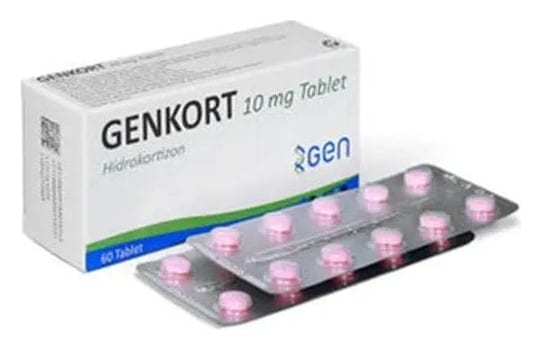

Genkort 10 mg Tablet, 60 Adet

Ne için kullanılır
KT · Bölüm 1GENKORT, ağız yoluyla kullanılan, pembe renkli, bir yüzü çentikli, diğer yüzü düz, kaplanmamış bikonveks tabletlerdir. Her kutuda 60 tablet içeren 6 adet PVC/Al blister mevcuttur.
GENKORT, 10 mg hidrokortizon içerir. Hidrokortizon hormonu, vücudun böbrek üstü bezleri tarafında üretilen doğal ve steroid yapısındaki hormonlarından biridir. Hidrokortizon hormonu, glukokortikoidler (steroidler) olarak bilinir. GENKORT, vücutta doğal olarak oluşan hidrokortizon hormonunun sentetik versiyonudur.
Hidrokortizon vücutta pek çok fonksiyonları düzenlemek ve şu hastalıkları tedavi etmek için kullanılır: Böbrek üstü bezlerinin yetersiz çalışması sonucu vücutta hidrokortizon hormonu eksikliği durumlarında (adrenokortikal yetmezlik) ilk seçenek tedavi veya mineralokortikoid grubu ilaçlarla kombine tedavi olarak, Bu ilacı kullanmaya başlamadan önce bu KULLANMA TALİMATINI dikkatlice okuyunuz, çünkü sizin için önemli bilgiler içermektedir.
- Bu kullanma talimatını saklayınız. Daha sonra tekrar okumaya ihtiyaç duyabilirsiniz. - Eğer ilave sorularınız olursa, lütfen doktorunuza veya eczacınıza danışınız. - Bu ilaç kişisel olarak sizin için reçete edilmiştir, başkalarına vermeyiniz. - Bu ilacın kullanımı sırasında, doktora veya hastaneye gittiğinizde doktorunuza bu ilacı kullandığınızı söyleyiniz. - Bu talimatta yazılanlara aynen uyunuz. İlaç hakkında size önerilen dozun dışında yüksek veya düşük doz kullanmayınız.
Doğuştan böbrek üstü bezlerinin aşırı gelişerek büyümesi (konjenital adrenal hiperplazi), Vücutta cerahatli olmayan tiroid bezi iltihapları, Kanserle beraber görülen hiperkalsemi, Kısa dönem uygulamalar için alevlenme ve ilerleme gösteren şu romatizmal hastalıkların tedavisinde: sedef hastalığı ile beraber seyreden eklem iltihapları, eklemlerde ağrı ve şekil bozukluğuna neden olan devamlı bir hastalık (romatoid artrit), sırt eklemlerinde sertleşme ile seyreden ağrılı ilerleyici bir romatizmal hastalık (ankilozan spondilit), eklem çevresindeki keselerin akut iltihabı, kas kiriş kılıfının iltihabı, gut hastalığına (damla hastalığına) bağlı gelişen eklem iltihapları, kireçlenme, kireçlenme ile birlikte eklem sıvısı iltihapları (sinovit), eklem üzerindeki yapıların iltihabı (epikondilit), Ciltte pullanmayla kendini gösteren bir hastalık (sistemik lupus eritematozus), Ödem ve kas zafiyeti ile kendini gösteren deri ve kas iltihabı (sistemik dermatomiyozit), Romatizmaya bağlı kalpte gelişen iltihaplanmalar (akut romatoid kardit), Deride gelişen şu iltihaplı hastalıkların tedavisinde: derinin iltihaplı hastalığı (pemfigus), Gluten duyarlılığı ile birlikte görülen sıvı dolu kabarcıklar ile birlikte seyreden iltihaplı deri hastalığı (büllöz dermatit herpatiformis), ciltte ve göz çevresinde kan oturması, şişlik ve kızarıklıkla seyreden iltihaplı hastalık (Stevens-Johnson sendromu), deride pul pul dökülme ile görülen iltihaplı durumlar (eksfolyatif dermatit), yüz, kol ve gövde üzerinde görülen deri lenfoması (mikozis fungoides), şiddetli sedef hastalığı, vücudun saç ve kıllı bölgelerinde şiddetli iltihaplanmalar (seboreik dermatit), Uygun standart tedaviye yanıt vermeyen şiddetli alerjik hastalıklar, saman nezlesi veya yıl boyu süren alerjik nezle, alerjik serum hastalığı, akciğerlerde bronşiyel astım, temasla ortaya çıkan deri hastalığı, atopik dermatit, ilaca karşı gelişen aşırı duyarlılık durumlarının tedavisi, Göz veya gözün bölümlerinde gelişen şiddetli alerjik ve iltihaplı durumların tedavisinde: alerjik göz iltihabı (alerjik konjonktivit), gözün saydam cisminin (kornea) iltihabı, gözün saydam cisminde gelişen alerjik yaralar (alerjik korneal ülser), virüs kaynaklı göz iltihapları (herpes zoster oftalmikus), gözün renkli kısmının iltihapları, gözün retina ve diğer kısımlarının birlikte iltihabı, gözün ön bölgesindeki iltihaplar, gözün damar tabakasının iltihapları, göz sinirlerinde iltihaplar, sinirsel göz iltihapları, Şiddetli ve ilerlemiş çeşitli akciğer veya solunum hastalıklarının tedavisinde: akciğerde nodül ve lezyonlarla gelişen ve belirti veren hastalık (semptomatik sarkoidozis), akciğer hastalığı (Loeffler sendromu), hızlı giden ve kötüleşen veya yaygın akciğer tüberkülozu, solunum yoluna mide içeriğinin kaçması sonucu gelişen akciğer iltihabı (aspirasyon pnömonisi), Ateş, iğne başı şeklinde kırmızı morarmalar, bilinç bulanıklığı, baş ağrısı ve trombositlerin sayısında azalma ile görülen hastalık (idiopatik trombositopenik purpura), yetişkinlerde ikincil gelişen trombosit-kan pulcuğu- sayısında azalma, sonradan gelişen otoimmün (Vücudun kendi hücrelerine karşı antikor oluşturma durumu), kansızlık eritroblast isimli kan hücrelerinde azalma, doğumsal kansızlık durumları (konjenital hipoplastik anemi), Yetişkinlerde kan hücrelerinin ve lenf bezlerinin kanseri, Çocukluk çağı akut kan hücrelerinin kanseri,
Sistemik lupus eritematozus nedeniyle gelişen böbrek hastalığına bağlı idrarda protein tespit edilmesi veya idrar söktürülmesinin uyarılması durumları, Kalın bağırsak iltihap yaraları, bölgesel bağırsak iltihapları (ülseratif kolit ve rejyonel enterit), Beyin ve omurilikte sinir iletiminin azalması ya da kötüleşmesi sonucu, ataklar halinde seyreden, ilerleyici ve şiddetli sinirsel hastalığın ataklarının tedavisi (multipl skleroz), Beyin zarlarının tüberküloza bağlı iltihapları, parazitlerin neden olduğu ağır ve öldürücü hastalıkların (trişinoz) tedavisinde kullanılır.